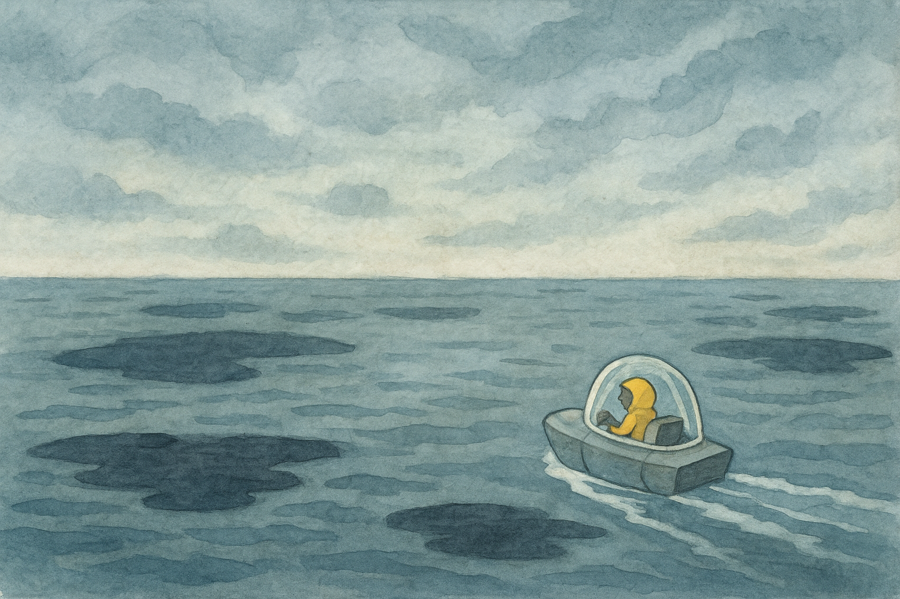
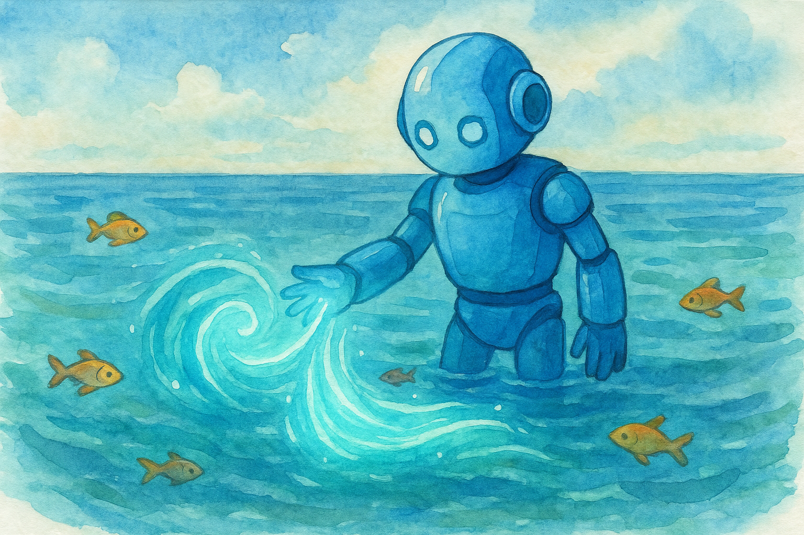

Когда «Искра» вышла из варп‑прыжка, иллюминаторы заполнились синим. Это была планета‑океан: ни кусочка суши, только безбрежная вода, уходящая за горизонт. Но цвет воды был странным. Она не сияла. Она казалась тусклой, как потухшее зеркало.
— Что‑то не так, — тихо сказал Аквас. Он стоял у панели и словно чувствовал воду прямо через стекло. — Океан болен.
Драгос, стоявший рядом, нахмурился: — Вода — вода. Как она может «болеть»?
— Может, — ответил Аквас. — Потому что вода — это жизнь. Если она темнеет, значит, умирает что‑то большее.
Прибытие
Они посадили «Искру» на небольшую плавучую платформу — единственную, что удалось найти. Ветер был тихий, но не умиротворяющий — скорее тревожный, будто океан сам шептал им: «Осторожно».
Аквас первым спустился к кромке воды. Он коснулся её рукой. — Она тяжёлая, — сказал он. — Словно тянет вниз.
Ветрос посмотрел на горизонт. — Смотрите.
По воде шли рябью чёрные пятна — словно тени, которые не должны были быть здесь. Иногда из этих пятен выпрыгивали существа, похожие на рыб, но их глаза светились тускло, безумно.
— Я не люблю воду, — пробормотал Драгос. — Она гасит мой огонь. Но это… это не вода.
Первая встреча
Они отправились на надувном челноке к источнику тёмных пятен. Чем дальше отплывали, тем тише становилось всё вокруг — не было звуков волн, не было криков птиц. Только чёрная гладь.
И вдруг прямо перед ними вода закипела, и из неё поднялось что‑то. Это был не монстр. Это был фрагмент — кусок металла, странного, чужого, покрытый символами, которые не могли быть написаны рукой живого существа. Из него исходил слабый, но ощутимый гул.
Аквас нахмурился. — Это… артефакт. Он упал сюда, и теперь вода несёт его тьму.
Драгос сжал кулаки. — Разнесём его. Прямо сейчас.
Вопрос
Аквас остановил его. — Ты не понимаешь. Если ударить — тьма растечётся. Она впитается глубже.
Ветрос крутил артефакт в руках. — Тогда что? Выбросить в космос?
Аквас покачал головой. — Нет. Нужно очистить.
— Очистить? — переспросил Драгос. — Ты воду, что ли, колдуешь?
Аквас не ответил. Он опустил руки в океан. Его корпус засиял мягким голубым светом. Вода вокруг зашевелилась, как будто узнала его.
— Я не буду ломать тебя, — сказал он океану. — Я помогу тебе дышать.
Исцеление
Это было не быстро. Аквас часами водил руками над водой, пуская мягкие волны. Его свет проникал в глубину, вытягивая тьму из артефакта, как будто чистил не металл, а саму память океана.
Драгос скучал и ворчал. — Можно я хоть маленький взрыв сделаю? Ну чуть‑чуть?
Ветрос усмехнулся. — Не всё лечится взрывами.
И правда — с каждой минутой вода светлела. Чёрные пятна исчезали. Рыбы, которые были злыми и безумными, возвращались, но уже с ясными глазами.
Когда последний след тьмы исчез, артефакт стал обычным, мёртвым куском металла.
— Теперь можно, — сказал Аквас, и Драгос с удовольствием бросил его в лавовый контейнер.
Последствие
«Искра» уходила в небо, а внизу сиял океан — настоящий, чистый, живой.
— Ты сделал это без боя, — сказал Ветрос. — Даже без крика.
Аквас улыбнулся. — Иногда, чтобы что‑то исправить, не нужно шуметь. Нужно просто быть рядом и не спешить.
Драгос фыркнул. — Никогда так не смог бы.
— И не нужно, — ответил Аквас. — У каждой стихии своя работа.

📜 Урок
Иногда проблему нельзя сломать или разнести. Иногда её нужно вылечить — терпением, заботой и временем.